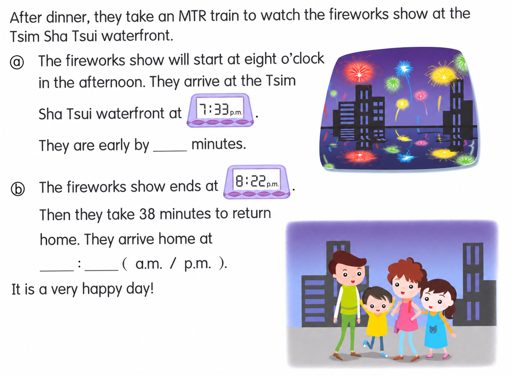
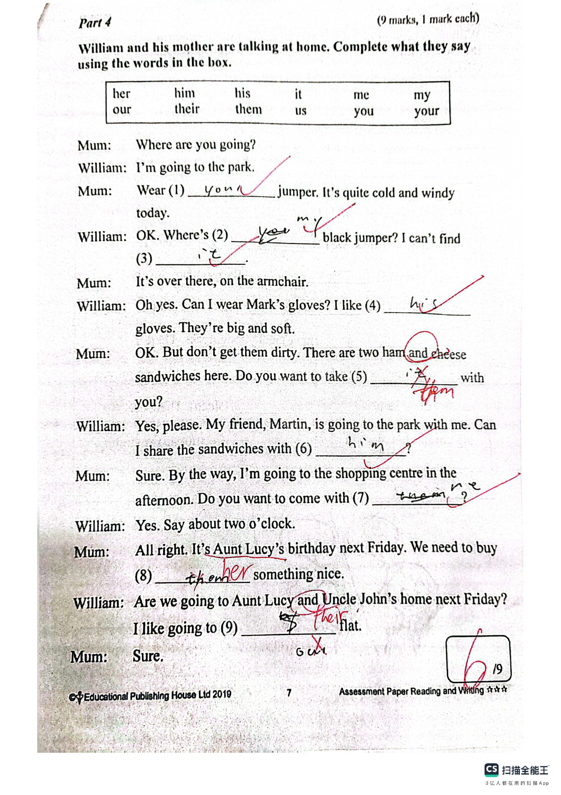
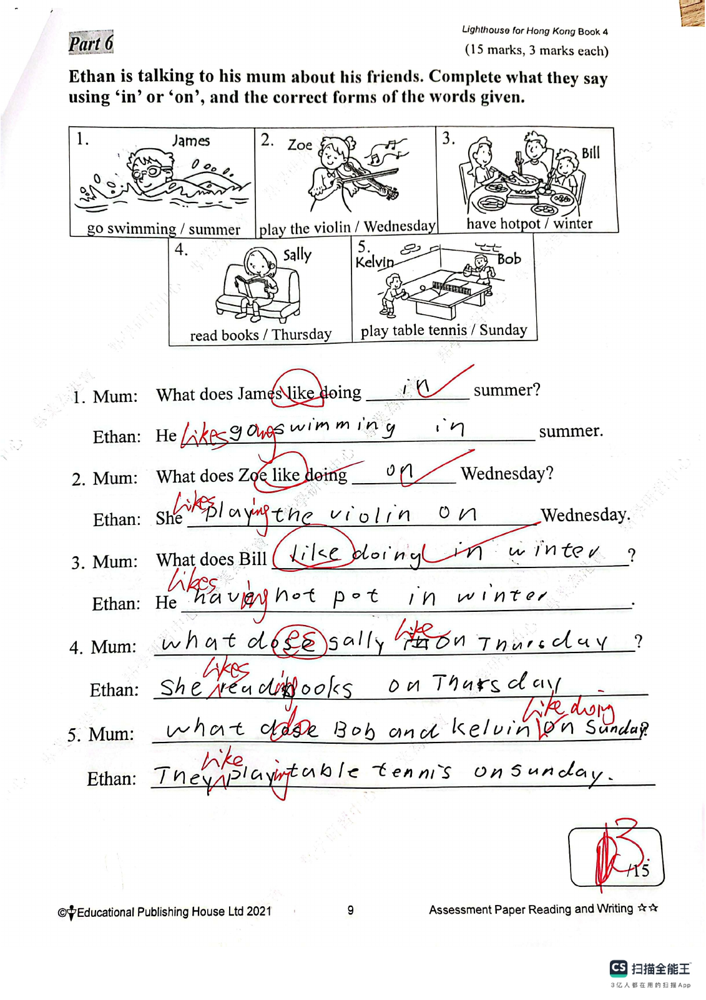
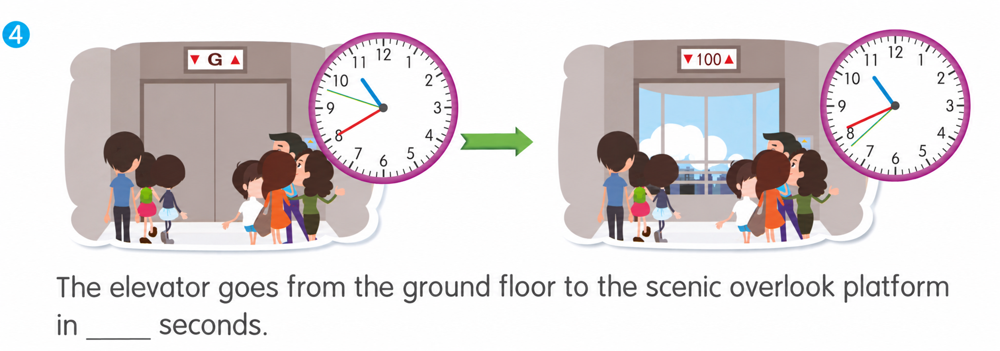

Answer: (a) 27 minutes; (b) 9:00 p.m.
已掌握
| # | 单词/词组 | 中文意思 | 例句/说明 | 已掌握 |
|---|---|---|---|---|
| noun 名词 | ||||
| 1 | pet | 宠物 | My pet is a hamster. | |
| 2 | model | 模型 | I build a car model. | |
| 3 | gift | 礼物 | I got a gift. | |
| 4 | cleaner | 清洁工人 | The cleaner works every day. | |
| 5 | minute | 分钟 | Please wait a minute. | |
| 6 | deer | 小鹿 | A deer is standing near the trees. | |
| 7 | train | 火车；训练 | We travelled to the city by train. | |
| 8 | Tuesday | 周二 | We go swimming on Tuesday. | |
| 9 | Saturday | 周六 | I play football on Saturday. | |
| verb 动词 | ||||
| 10 | stay | 待在 | I stay at home on rainy days. | |
| 11 | have a meal | 吃饭 | We have a meal together every evening. | |
| phrase 短语 | ||||
| 12 | years old | 年龄 | I am seven years old. | |
| 13 | post office | 邮局 | I sent the parcel from the post office. | |
| noun phrase 名词短语 | ||||
| 14 | school hall | 礼堂 | We sing together in the school hall. | |
| adjective 形容词 | ||||
| 15 | thirsty | 口渴的 | I am thirsty after running. | |
| 16 | wet | 湿润的；湿的 | My shoes are wet from the rain. | |
| 17 | difficult | 困难 | This question is difficult. | |
| pronoun 代词 | ||||
| 18 | they | 他们 | They are my friends. | |
| verb/noun 动词/名词 | ||||
| 19 | travel | 旅行 | We travel during the holiday. | |
| uncategorized 未分类 | ||||
| 20 | hide | 隐藏 | The children hide behind the tree. | |
| # | 单词/词组 | 中文意思 | 例句/说明 | 已掌握 |
|---|---|---|---|---|
| adjective 形容词 | ||||
| 1 | brilliant | 聪明的；杰出的 | That is a brilliant idea. | |
| 2 | excellent | 优秀 | Your work is excellent. | |
| 3 | surprised | 惊讶的 | My parents were surprised. | |
| 4 | careless | 粗心的；不小心的 | A careless mouse ran across the lion's paw. | |
| noun 名词 | ||||
| 5 | crocodile | 鳄鱼 | The crocodile is in the river. | |
| 6 | farming | 耕种；农业 | Farming provides us with food. | |
| 7 | lollies | 棒棒糖 | The children bought some lollies. | |
| 8 | salt | 盐 | Put the egg and the salt into a bowl. | |
| 9 | chopsticks | 筷子 | We eat noodles with chopsticks. | |
| 10 | sale | 大减价，促销 | The shop is having a summer sale. | |
| 11 | receipt | 收据 | Eric has a receipt from a shop. | |
| noun phrase 名词短语 | ||||
| 12 | contents page | 目录页 | The contents page lists the chapters in the book. | |
| 13 | high jump | 跳高 | He can do the high jump. | |
| 14 | the swimming gala | 游泳比赛（游泳嘉年华） | The swimming gala is on 16th April. | |
| 15 | a knife | 刀 | Cut it into small pieces with a knife. | |
| 16 | a bowl | 碗 | Put the egg into a bowl. | |
| 17 | a plate | 盘子 | Serve the sandwich on a plate. | |
| 18 | a handbag | 手提包 | They gave me a handbag. | |
| verb 动词 | ||||
| 19 | recycle | 回收利用 | We often recycle things we do not use any more. | |
| 20 | share | 分享 | I like to share my toys with my friends. | |
| phrase 短语 | ||||
| 21 | make a mess | 弄得一团糟 | Please do not make a mess in the room. | |
| 22 | look at | 看 | Please look at the picture. | |
| 23 | from day to night | 从早到晚 | They always work from day to night. | |
| verb phrase 动词短语 | ||||
| 24 | play football | 踢足球 | I play football every Saturday morning. | |
| 25 | watch a film | 看电影 | We watch a film at the cinema. | |
| 26 | have a birthday party | 举办生日派对 | I want to have a birthday party at home. | |
| 27 | prepare food | 准备食物 | Lester is helping his mum prepare food for his party. | |
| number 数词 | ||||
| 28 | million | 一百万 | One million is 1,000,000. | |
| uncategorized 未分类 | ||||
| 29 | lantern | 灯笼 | We hung a red lantern by the door. | |
| adjective/noun 形容词/名词 | ||||
| 30 | light | 明亮的；灯光 | The room is light and warm. Please turn off the light. | |
| # | 单词/词组 | 中文意思 | 例句/说明 | 已掌握 |
|---|---|---|---|---|
| time/date 时间日期 | ||||
| 1 | Friday | 星期五 | Friday is a weekday. | |
| 2 | Saturday | 星期六 | Saturday is a weekend day. | |
| time unit 时间单位 | ||||
| 3 | minute | 分 | A minute has 60 seconds. | |
| directions 方向 | ||||
| 4 | east | 东 | The sun rises in the east. | |
| 5 | north | 北 | North is a direction. | |
| 6 | south | 南 | South is a direction. | |
| numbers 数字 | ||||
| 7 | three | 3 | Three is 3. | |
| 8 | five | 5 | Five is 5. | |
| 9 | seven | 7 | Seven is 7. | |
| 10 | seventeen | 17 | Seventeen is 17. | |
| 11 | thirty | 30 | Thirty is 30. | |
| 12 | seventy | 70 | Seventy is 70. | |
| 13 | hundred | 百 | One hundred is 100. | |
| solid shape 立体图形 | ||||
| 14 | quadrilateral pyramid | 四棱锥 | A quadrilateral pyramid has one quadrilateral base and four triangular side faces. | |
| 15 | sphere | 球 | A sphere is round. | |
| # | 单词/词组 | 中文意思 | 例句/说明 | 已掌握 |
|---|---|---|---|---|
| operations 运算 | ||||
| 1 | borrowing | 借位 | Borrowing helps when we subtract. | |
| geometry 几何 | ||||
| 2 | perpendicular line | 垂直线 | Perpendicular lines meet at a right angle. | |
| 3 | parallel to each other | 相互平行 | The two lines are parallel to each other. | |
| question word 题目词 | ||||
| 4 | calculate | 计算 | Calculate the answer. | |
| 5 | estimate | 估计 | Estimate the answer first. | |
| 6 | count | 数数 | Count from 1 to 10. | |
| 7 | match | 匹配 | Match the number to the word. | |
| comparison 比较 | ||||
| 8 | fewer | 更少 | There are fewer apples in this box. | |
| 9 | most | 最多的 | Which group has the most? | |
| 10 | fewest | 最少的 | Which group has the fewest? | |
| 11 | shortest | 最短的 | Find the shortest line. | |
| 12 | lighter | 更轻的 | A pencil is lighter than a brick. | |
| position 位置 | ||||
| 13 | above | 上面 | The clock is above the board. | |
| 14 | arrow | 箭头 | The arrow points to the right. | |
| operations calculation 运算 | ||||
| 15 | subtract A from B | B-A | "Subtract A from B" means B - A. | |
| 16 | expression | 式子 | Write the expression in horizontal form. | |
| 17 | quotient | 商 | The quotient is the answer in division. | |
| teacher math vocabulary 老师数学词汇 | ||||
| 18 | between ... and ... | 在……和……之间 | 7 is between 6 and 8. | |
| 19 | finish | 完成 | Please finish the calculation. | |
| currency money 货币 | ||||
| 20 | pay for | 支付 | I pay for the book. | |
| measurement 测量 | ||||
| 21 | distance | 距离 | Find the distance between the two points. | |
| 22 | millimeter | 毫米 | One millimeter is one tenth of a centimeter. | |
| 23 | balance | 天平 | We use a balance to compare the weights of two objects. | |
| 24 | pointer | 指针 | The pointer on the scale shows 2 kg. | |
| 25 | width | 宽度 | The rectangle has a length of 8 cm and a width of 5 cm. | |
| position order 位置和顺序 | ||||
| 26 | following | 下面的 | Answer the following questions. | |
| directions tool 方向工具 | ||||
| 27 | compass | 指南针 | A compass shows directions. | |
| 句型结构 | ||||
| 28 | The lines are perpendicular to each other. | 这些线彼此垂直。 | The lines are perpendicular to each other. | |
| plane shape 平面图形 | ||||
| 29 | upper base | 上底 | The upper base of this trapezium is 4 cm long. | |
| 30 | right-angled trapezium | 直角梯形 | A right-angled trapezium has two right angles. | |




